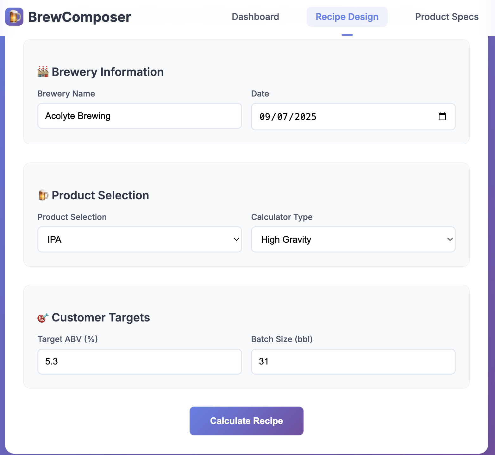

Our evidence-based platform transforms brewery operations with precision and efficiency.
Proven algorithms that optimize brewing processes based on real-world data and industry best practices.
Continuous tracking of brewing parameters with instant alerts for deviations and optimization opportunities.
Built-in quality assurance protocols that ensure consistency across every batch.
BrewComposer offers a user-friendly self-service web application for breweries to design recipes, optimize production, and achieve their targets independently.
Our program has demonstrated significant financial impact across multiple brewery implementations:
| Metric | Value |
|---|---|
| US Beer Barrels | 5.73 |
| Litres | 672.4 |
| 330ml Cans | 2,037 |
| Cases | 84 |
Potential Profit Increase: $2,168.09
*Results vary based on product, packaging ratio, and equipment available. The program highlights areas of opportunity and areas needing further analysis and process improvement.